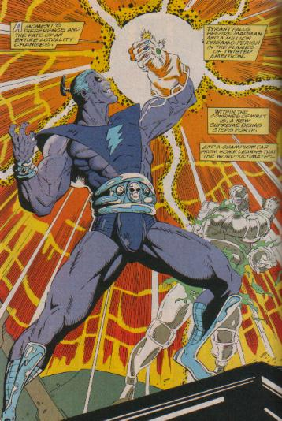

Magus
The Magus was once the evil future version of Adam Warlock. Warlock and Thanos thought they had gotten rid of the Magus, but when Adam Warlock gained posession of the Infinity Gauntlet he decided to expel the good and evil side of himself. That evil side is now the Magus.